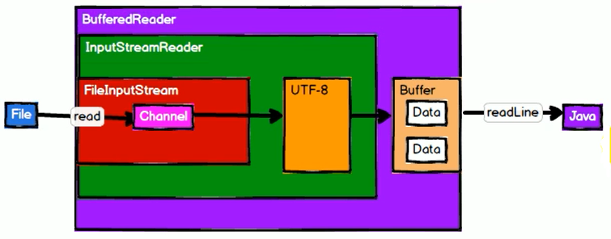

SparkCore
JAVA IO
输入 输出——>字节 字符
输入输出文件通过字节还是字符要看文件存的什么类型内容（文件格式），比如：
txt文件一般是使用字符流，因为其中存的一般是一些文字信息，是一些字符串，而字符串又恰恰是由一个个字符组成的。
rar、zip、png这些文件一般是使用字节流的。
字节流
// 文件输入流
InputStream in = new FileInputStream("test.txt");若像上面那么操作，效率并不是很高，因为是按字节来操作（一个字节一个字节来读取，速度会很慢），因此应该加个缓冲流
// 缓冲流（其中new FileInputStream("test.txt")就相当于上面文件输入流的 in）
InputStream bufferIn = new BufferedInputStream(new FileInputStream("test.txt"))Java中的IO就体现了装饰者设计模式（功能扩招——本来没这个功能，包装一下就有了这个功能）
从上面可以看出，FileInputStream（in）首先从文件中读取数据，然后通过 channel（通道）写入到 BufferedInputStream（缓冲区）中，然后当 BufferedInputStream 中数据达到一定数量的时候，统一往外写出。
因此，其实读取文件的其实依然是FileInputStream（in）而不是 BufferedInputStream 对象。这就相当于是对 BufferedInputStream 对象的一个功能的补充，也就是装饰者模式。
字符流
按行读取文件需要用到字符流）
// 文件输入流
InputStream in = new FileInputStream("test.txt");
// 字符流读取一行数据（之所以要传"UTF-8"是因为BufferedReader不知道如何将字节组合成字符，因为不同编码方式其组合方式是不同的）
Reader reader = new BufferedReader(new InputSteamReader(in, "UTF-8"))
其中并不是一开始便开始执行，而是从最后的readLine开始，当发起readLine请求，才一步步往前推开始执行
RDD概述
RDD中的装饰者模式
其中textFile将数据读取之后自己没法处理，因此在其外面包了一层新的类来对数据进行切分（flatMap）；然后发现切分后没法统计，因此又包了一层来对数据进行分别统计（map）；统计后又没法整合，因此又包了一层（reduceByKey）
其与JAVA IO的区别在于RDD从属于分布式的集群操作以及RDD是将数据处理逻辑进行了封装，而JAVA IO是封装的类。
另外RDD每层封装数据并没发生变化，始终都是都进来的那些数据。
什么是RDD
RDD（Resilient Distributed Dataset）叫做弹性分布式数据集，是Spark中最基本的数据（逻辑）抽象。代码中是一个抽象类，它代表一个不可变、可分区（并行）、里面的元素可并行计算的集合。
RDD的属性
1) 一组分区（Partition），即数据集的基本组成单位;
2) 一个计算每个分区的函数;
3) RDD之间的依赖关系（逻辑不断嵌套，依赖关系越来越长）;
4) 一个Partitioner，即RDD的分片函数;
5) 一个列表，存储存取每个P artition的优先位置（preferred location）。
从上图可看出Driver要将当前任务分发给哪个Executor执行取决于当前任务所需要数据在哪个DN上（因为Executor就是部署在DN上的），而数据所在DN就是其优先位置，也就是列表中所存的。
RDD特点
RDD表示只读的分区的数据集，对RDD进行改动，只能通过RDD的转换操作，由一个RDD得到一个新的RDD，新的RDD包含了从其他RDD衍生所必需的信息。RDD之间存在依赖，RDD的执行是按照血缘关系延时计算的。如果血缘关系较长，可以通过持久化RDD来切断血缘关系。
延时计算：当用到的时候才会去计算，就像RDD中的装饰者模式中给出的图，其中只有在执行collect的时候，才会一步步往前推产生计算关系。
分区——便于并行计算
RDD逻辑上是分区的，每个分区的数据是抽象存在的，计算的时候会通过一个compute函数得到每个分区的数据。如果RDD是通过已有的文件系统构建，则compute函数是读取指定文件系统中的数据，如果RDD是通过其他RDD转换而来，则compute函数是执行转换逻辑将其他RDD的数据进行转换。
只读
RDD是只读的，要想改变RDD中的数据，只能在现有的RDD基础上创建新的RDD。
由一个RDD转换到另一个RDD，可以通过丰富的操作算子实现，不再像MapReduce那样只能写map和reduce了，如图
算子：从认知心理学角度讲，解决问题其实是将问题的初始状态通过一系列的操作（算子、Operate）对问题的状态进行转换，然后达到完成（解决）状态。Spark中方法就是算子。
RDD的操作算子包括两类，一类叫做transformations（转换算子），它是用来将RDD进行转化，构建RDD的血缘关系；另一类叫做actions（行动算子），它是用来触发RDD的计算，得到RDD的相关计算结果或者将RDD保存的文件系统中。下图是RDD所支持的操作算子列表。
transformations（转换算子）：只转换数据的结构——textFile、flatMap、map、reduceByKey
actions（行动算子）：触发数据计算——collect
依赖
RDD通过操作算子进行转换，转换得到的新RDD包含了从其他RDD衍生所必需的信息，RDD之间维护着这种血缘关系，也称之为依赖。如下图，依赖包括两种，一种是窄依赖，RDD之间分区是一一对应的，另一种是宽依赖，下游RDD的每个分区与上游RDD(也称之为父RDD)的每个分区都有关，是多对多的关系。
缓存
如果在应用程序中多次使用同一个RDD，可以将该RDD缓存起来，该RDD只有在第一次计算的时候会根据血缘关系得到分区的数据，在后续其他地方用到该RDD的时候，会直接从缓存处取而不用再根据血缘关系计算，这样就加速后期的重用。如下图所示，RDD-1经过一系列的转换后得到RDD-n并保存到hdfs，RDD-1在这一过程中会有个中间结果，如果将其缓存到内存，那么在随后的RDD-1转换到RDD-m这一过程中，就不会计算其之前的RDD-0了。
CheckPoint
虽然RDD的血缘关系天然地可以实现容错，当RDD的某个分区数据失败或丢失，可以通过血缘关系重建。但是对于长时间迭代型应用来说，随着迭代的进行，RDD之间的血缘关系会越来越长，一旦在后续迭代过程中出错，则需要通过非常长的血缘关系去重建，势必影响性能。为此，RDD支持checkpoint将数据保存到持久化的存储中，这样就可以切断之前的血缘关系，因为checkpoint后的RDD不需要知道它的父RDDs了，它可以从checkpoint处拿到数据。